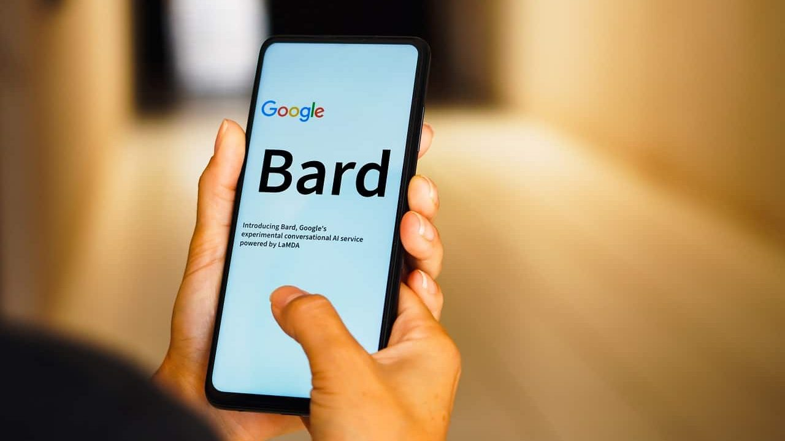

O ano de 2023 foi positivo para a Microsoft. A big tech finalmente concluiu a compra da Activision Blizzard, que a transformou na terceira maior empresa de games do mundo. Ela também deixou o Google para trás ao lançar uma ferramenta própria de inteligência artificial (integrada ao Bing).
Conclusão da compra da Activision Blizzard
A conclusão da aquisição da Activision Blizzard foi o fato mais importante de 2023. Para fechar todo o processo de compra, anunciado lá janeiro de 2022, a Microsoft teve até que aceitar que perdeu a guerra dos consoles (palavras dela, não minhas). A big tech mostrou que os usuários ativos de Xbox representam 21% do mercado, contra 34% da Sony e 50% da Nintendo.
A Microsoft justificou que a aquisição da Activision Blizzard é parte da sua estratégia para ganhar mais fatia no universo gamer ao vender os jogos.
'Ok, Bard!' Imagens vazadas mostram chatbot no Google Assistente
O desenvolvedor Dylan Roussel revelou como fica o chatbot Bard quando integrado ao Google Assistente - a Siri dos celulares Android. Roussel organizou as capturas de tela da interface da inteligência artificial (IA) num “fio” (“thread”) no X (antigo Twitter).

Roussel avisa que os recursos mencionados podem estar diferentes nos prints do que virão a ser quando o Google lançá-los oficialmente. Além disso, a descoberta de um novo ícone para o assistente no código do aplicativo do Google sugere que o lançamento está próximo.
O Google Assistente com Bard deve chegar primeiro aos celulares Google Pixel 8 e Samsung Galaxy S24. Depois, espera-se que a empresa distribua a integração a outros aparelhos de maneira gradual.
As imagens mostram que as capacidades iniciais do Bard incorporam algumas funções do Google Assistente “clássico”. A ênfase aqui está na criação de textos para e-mails, posts de redes sociais, resumos de vídeos do YouTube e explicações sobre diversos tópicos.
Ainda segundo as capturas de tela, a interface do usuário apresenta o Bard como uma janela pop-up no Android, capaz de se expandir para uma tela cheia. Essa tela mostra o histórico recente de chats e novas sugestões de comandos.